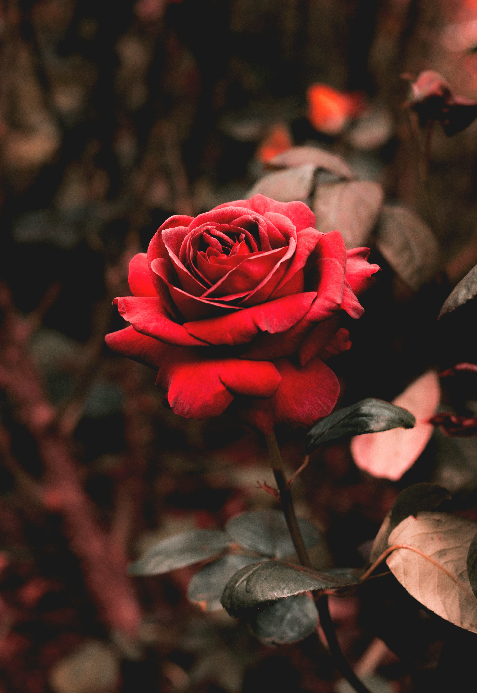

Roses are the classic symbol of love. Red roses, in particular, symbolize passionate love. Other colors convey different emotions — white roses represent purity and innocence, pink roses admiration and gratitude — making roses the quintessential expression of affection. Roses are appropriate for almost any occasion you can think of but are most commonly given on anniversaries, weddings, and Valentine’s
Uses
Roses are best known as ornamental plants grown for their flowers in the garden and sometimes indoors. They have been also used for commercial perfumery and commercial cut flower crops. Some are used as landscape plants, for hedging and for other utilitarian purposes such as game cover and slope stabilization.